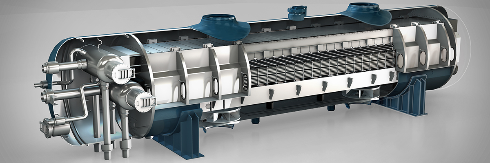
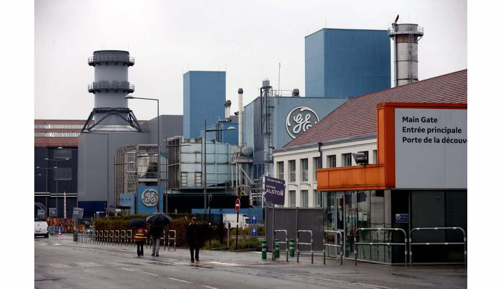

Here is a deep dive into my professional experiences, from graduation to nowdays. What I learnt and what I did.
After my graduate program at GE power, I understood my that I had most enjoyment working on data related topics. Driven by this desire to learn more about data, I joined GE Healthcare within the service team. There, I was in charge of digitalizing the Imaging service team.

Where I was
I was in the service team for mammography
Three projects I learnt from:
- Mammography what it is it :
- Databases enhencement Geet data, analyze data, I had the opportunity to work on data from the system, to the end user (engineers who are using the data to enhance their projects.) THe data telemetry : Actions performed by users, than gathered and sent to and MongoDB vs MySQL? stuffs
- Peedictive maintenance
What I learnt
- NLP
- Python
- SQL
- NoSQL
- Databases
- MongoDB
- MySQL
- Postgres
- Industrial Digitalization
- Xrays
- Mammography
- GE
- Predicitve Maintenance
Works related to energy projects
As a young engineer, I integrated the Edison Engineering Development Program, a program for young graduate which offers the opportunity to work on several engineering projects at General Electric.
-
4th rotation – GE Steam Power, System team:
Where I was
I was working at the system team in the steam turbine engineering study office
What I did
I was working on the Flamanville 3, 1600MW Nuclear power plant, I was in charge of the the plant accessories maintenance program, I worked in hand with EDF (main electricity provider in France) to detail specifications for maintenance of accessories equipments, as well as planification of the maintenance.

What I learnt
The main difficulties of this rotation was to handle a large volume of information for a large spectrum of equipments (I handled the maintenance for over 50 systems), which comes with a large number of interlocutors (30 people) involved in the process, from equipment suppliers, nuclear engineers, and customers. I also had the opportunity to work on site, in Flamanville.
-
3rd rotation – GE Power Services, BoP Nuc. team:
Where I was
I was working in the Balance of Plant nulcear team close to Paris in La Courneuve whithin the engineering study office.
What I did

I had the opportunity to work on several projects during my rotation there, including :- First, I lead a study to quantify the impact of the degradation of Moisture Separator Reheater (MSR) on the French nucleat power plants performances using a thermal cycle modeling software, in hand with EDF (main electricity provider in France). Isolated high losses from the degradation and non maintenance of equipments. I compared this study with field data and isolated most impacted nuclear sites in France. I also isolated losses on Swedish Nuclear reactors.
- Second, I gave support to the RCV1300 Heat Exchangers project, which aims at providing new chemical and volume control system (RCV) heat exchangers for the French Nuclear power plants, aiming at providing a new set of spare heat exchangers for French 1300MW power plants. In this effort, I hand out Regulatory Files Reports to the project (specifications, risks analysis). Nuclear Safety Regulations are constantly evolving, and it is difficult for contractors to comply with new regulations. The outcome and on-time delivery of these documents is essential to the success of nuclear projects.
What I learnt
On a technical basis, I and was able to deepen my comprhension of the nuclear thermal cycle, and paramters involved in power plant efficiencies. I experienced the difficultiies of complying to nuclear regulations, as well as the nececity to have a strong process in place to regulate these highly pressurized equipments. A lot of initiatives are ongoing to simplify these process, such as digital poles in place at EDF to make the french nuclear market accessible to all contractor (these regulation can be a barrier that small size companies can't handle)
-
2nd rotation – GE Gas Power Systems, Testing team
Where I was
In this second rotation, I integrated the testing data system team (part of Belfort Technology Laboratory) in the preparation and the handling of the 9HA.01 and 9HA.02 (370 & 420MW gas turbines, most efficient gas turbines in the world at the time).
What I did
As part of the data system team, I had the chance to work on projects related to the gathering of performances of the turbines tested.
 - contributed to working on a new software for the calibration of Clearances (radius between the blade of the turbine and the case of the turbine), coded in labview
- I prepared the test whithin the gas turbine test bench, and cutributed to solving manufactirung issues (as an NPI, this program had to be specilly manufactured for the handling of the performances tests)
- I configured and prepared the systems for gathering the data used to evaluate the performances of the turbines : clearances and Tip-Timing data
- I dealt with suppliers to get instrumentation hardware used for the Tests
- I conducted the installation of the turbine test bench, installed instrumentation on the turbine, and participated in the monitoring of the turbine performances.
- I lead a team of 10 contractors to demobilize the turbine test bench for clearance probes, and laser probes, answer to technical issues and chose a strategy for demobilization.
- contributed to working on a new software for the calibration of Clearances (radius between the blade of the turbine and the case of the turbine), coded in labview
- I prepared the test whithin the gas turbine test bench, and cutributed to solving manufactirung issues (as an NPI, this program had to be specilly manufactured for the handling of the performances tests)
- I configured and prepared the systems for gathering the data used to evaluate the performances of the turbines : clearances and Tip-Timing data
- I dealt with suppliers to get instrumentation hardware used for the Tests
- I conducted the installation of the turbine test bench, installed instrumentation on the turbine, and participated in the monitoring of the turbine performances.
- I lead a team of 10 contractors to demobilize the turbine test bench for clearance probes, and laser probes, answer to technical issues and chose a strategy for demobilization.
What I learnt
This was a very constructive rotation, where I developped strongly on a technical side by being able to manipulate data from end to end, I had the opportunity to work on probes, and systems gathering data, tests, and monitoring. I also improved strongly on my time management and project management skills, by being able to lead a large team, and having multiple projects at the same time.
-
1st rotation – GE Gas Power Systems, New Products Introduction team:
Where I was
For this first rotation, I started in the New Products Instrumentation team, which is is charge of introducing, and developping new accessories for the gas turbines.
What I did
I had the opportunity to work on a medium size gas turbine (6F.01, 120MW power station), where I was in charge of developping a fluid model of the gas injection system for a project in Israel. This 1D model of the auxiliaries systems (made using a fluid mechanics software) aimed at assisting the commissioning of this site for evaluating the performances of the turbine, as well as compliying with the regulations, imposing maximum emissions requirments. This model is helpful in case of transitory state for the turbine.
What I learnt
 I developped technical skills in fluid mechanics, in coding, and in project management.
I developped technical skills in fluid mechanics, in coding, and in project management.
-
Coursework Project – Digital Platform (Predix)
Where I was
I was working for the digitalization team in Belfort, which is in charge of delivering digital product to engineering teams.
What I did
As part of the digital team, our client was the turbine test bench in Belfort, which needed automatically generated control charts for the monitoring of turbine tests performances. I did all of the development in Python. The result was a tool which generated automated control charts graphs in a reports after the turbine tests were handled. Moreover, I worked on some scripts to store the engineering results (which were previously stored on test files) to hadle the results in Predix platform.


What I learnt
Essentially coding skills, python skills, and also presenting skills, as our project add direct exposure to executives.
Edison Engineering Development Program
The Edison Engineering Development Program is 2-year early career program consisting of 4 rotational assignments focused on engineering projects driven business priorities. The program allows participants to combine advanced engineering coursework (10+ hours/week) with valuable work experience. Along the program, the participants are offers various training and engineering events.